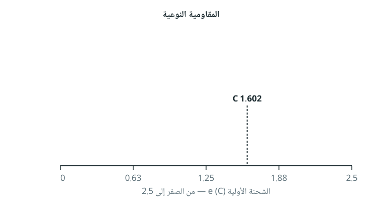

المقاومية النوعية
Electrical resistivity
المقاومية النوعية خاصية للمادة تقيس مقاومتها لسريان التيار، ورمزها ρ ووحدتها Ω·m. لا تعتمد على شكل الموصل، بخلاف المقاومة التي تعتمد على الطول والمقطع.
المقاومية النوعية، ورمزها ρ، هي خاصية مكثفة للمادة تصف مقاومتها لسريان التيار الكهربائي، ووحدتها أوم·متر. وهي مقلوب الموصلية σ. والمقاومة R التي تُقاس بالأوم تخصّ قطعة محددة من المادة، وتعتمد على طولها ومقطعها وعلى المقاومية: R = ρ·L/A. فسلكان من المادة نفسها لهما المقاومية نفسها، لكن مقاومتيهما تختلفان إذا اختلف طولهما أو مقطعهما. هذا الفصل بين خاصية المادة وهندسة القطعة هو أهم ما تعلّمه المقاومية: تُمكّن من مقارنة المواد بلا أثر للشكل. وفي المعادن ترتفع المقاومية بالحرارة لأن اهتزاز الشبكة يزداد فيزيد تشتيت الإلكترونات. مثال: مقاومية النحاس عند 20 °م نحو 1.68×10⁻⁸ Ω·m، فسلك طوله 100 m ومقطعه 2.5 mm² مقاومته 1.68×10⁻⁸ × 100/(2.5×10⁻⁶) = 0.672 Ω.
كيف تعمل الظاهرة؟
المقاومية تنشأ من تشتيت الحاملات أثناء انجرافها. في معدن، الإلكترونات الحرة تتسارع بالمجال لكنها تصطدم بالشبكة البلورية وبالشوائب وبالفونونات، فتصل إلى سرعة انجراف ثابتة. كلما زادت كثافة مصادر التشتيت قصر الزمن المتوسط بين تصادمين، فانخفضت سرعة الانجراف، فارتفعت المقاومية. عند تسخين المعدن يزداد عدد الفونونات فتزداد التصادمات فترتفع المقاومية خطياً تقريباً مع الحرارة. وفي أشباه الموصلات يحدث العكس: الحرارة تحرّر حاملات أكثر فينخفضت المقاومية. هذا الاختلاف في الآلية هو سبب اختلاف إشارة معامل الحرارة بين نوعي المواد.
العلاقة بالأرقام
ρ = 1/σ = E/J بوحدة Ω·m. وR = ρ·L/A. والاعتماد الحراري في المعدن ρ(T) = ρ₂₀·[1 + α·(T − 20 °C)] حيث α معامل الحرارة. وقانون درود ρ = m/(n·e²·τ) حيث n عدد الحاملات وτ الزمن المتوسط بين تصادمين. مثال عددي: نحاس ρ = 1.68×10⁻⁸ Ω·m، α = 0.003 93 K⁻¹؛ عند 80 °م: ρ = 1.68×10⁻⁸ × (1 + 0.003 93×60) = 1.68×10⁻⁸ × 1.236 = 2.08×10⁻⁸ Ω·m، أي ارتفاع 24%.
مفاهيم متقاربة
المقاومية والمقاومة تختلفان في النوع: الأولى مكثفة للمادة والثانية مقترنة بالقطعة. وليست الموصلية، بل مقلوبها. وليست مقاومية التلامس، التي تخص سطح تماس بين مادتين لا المادة نفسها. والخطأ الشائع أن تُستعمل Ω·m وΩ·mm²/m بالتبادل بلا تحويل: 1 Ω·mm²/m = 10⁻⁶ Ω·m، والخلط بينهما يخطئ بعامل مليون. وأخيراً المقاومية ليست خاصية ثابتة للمادة النقية، فالشوائب بنسبة أجزاء في المليون تغيّرها قياساً.
حدود التطبيق
المقاومية غير معرّفة للموصلات الفائقة، حيث تنعدم تحت درجة حرجة فيُستبدل بها حدّ كثافة تيار حرجة. وفي العوازل الجيدة تصير المقاومية كبيرة جداً بحيث تُقاس بالمقاومية الحجمية والسطحية معاً، لأن السطح قد يوصل أكثر من الحجم. وفي الأغشية الرقيقة تصير المقاومية خاصية تعتمد على السماكة، فلا تُقارن مباشرة بالمادة الكتلية. ولا تُستعمل المقاومية وحدها لوصف سلوك متردد عالي التردد، حيث تدخل ظاهرة القشرة والمفاعلة.

| الكمية | القيمة | المصدر |
|---|---|---|
| الشحنة الأولية e | 1.602 176 634×10⁻¹⁹ C | [1] |
| ثابت بولتزمان k | 1.380 649×10⁻²³ J/K | [2] |
| ثابت بلانك h | 6.626 070 15×10⁻³⁴ J·s | [3] |
المصادر
- 1 CODATA Value: elementary charge — NIST — CODATA 2022 recommended values (2024). physics.nist.gov/cgi-bin/cuu/Value?e · اطُّلع عليه 2026-11-21
- 2 CODATA Value: Boltzmann constant — NIST — CODATA 2022 recommended values (2024). physics.nist.gov/cgi-bin/cuu/Value?k · اطُّلع عليه 2026-11-21
- 3 CODATA Value: Planck constant — NIST — CODATA 2022 recommended values (2024). physics.nist.gov/cgi-bin/cuu/Value?h · اطُّلع عليه 2026-11-21
استشهد بهذا المصطلح
الصيغتان مبنيتان من بيانات الصفحة نفسها: العنوان والتاريخ ورابط النسخة المنشورة.
المقاومية النوعية — Electrical resistivity. (2026). ديوان المعرفة — انفراد. https://infiradev.com/diwan/terms/term-resistivity.html
@misc{term-resistivity2026,
title = {المقاومية النوعية},
titleaddon = {Electrical resistivity},
howpublished = {{ديوان المعرفة — انفراد} — مرجع علمي عربي},
year = {2026},
url = {https://infiradev.com/diwan/terms/term-resistivity.html},
urldate = {2026-11-26},
note = {مراجعة علمية: hermes (مراجعة معتمدة 2026-11-26)}
}
راجعه: hermes (مراجعة معتمدة 2026-11-26) · 2026-11-26 · آخر تحديث 2026-11-21